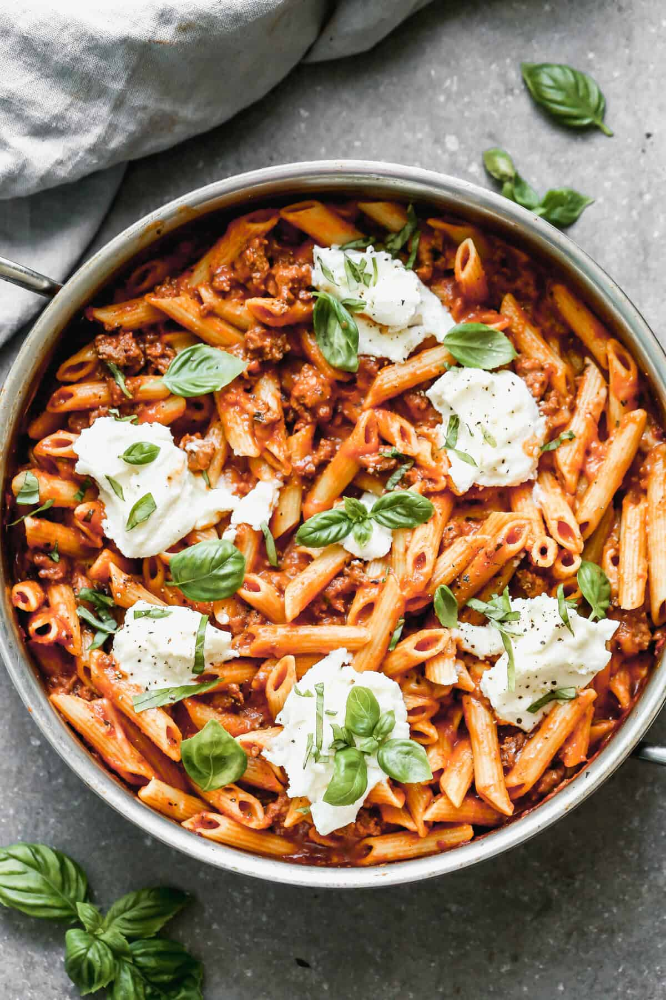

One Pan Skillet Lasagna
Ingredients
- 1 Tablespoon olive oil
- 1 pound ground beef
- 1 clove garlic, minced
- 1 Tablespoon dried minced onion
- 24 ounces pasta sauce
- 1/4 teaspoon dried oregano
- 1/4 teaspoon dried basil
- 1/8 teaspoon garlic powder
- 8 ounces bite-size pasta (penne or rigatoni)
- 1 1/2 cups water
- 1/4 cup freshly grated parmesan cheese
- 3/4 cup shredded mozzarella cheese
- 1/2 cup ricotta cheese
- Fresh basil leaves for topping
Instructions
- Heat olive oil in a large skillet over medium-high heat. Add ground beef and cook until browned.
- Stir in garlic, minced onion, pasta sauce, oregano, basil, garlic powder, and red pepper flakes (optional).
- Bring sauce to a simmer and stir in the uncooked pasta and water.
- Bring to a boil, then reduce heat to low, cover, and simmer for 13–15 minutes until pasta is tender.
- Remove from heat. Stir in parmesan and mozzarella cheese.
- Dollop ricotta cheese on top, cover for a few minutes to melt, and top with fresh basil before serving.
Source: Tastes Better From Scratch